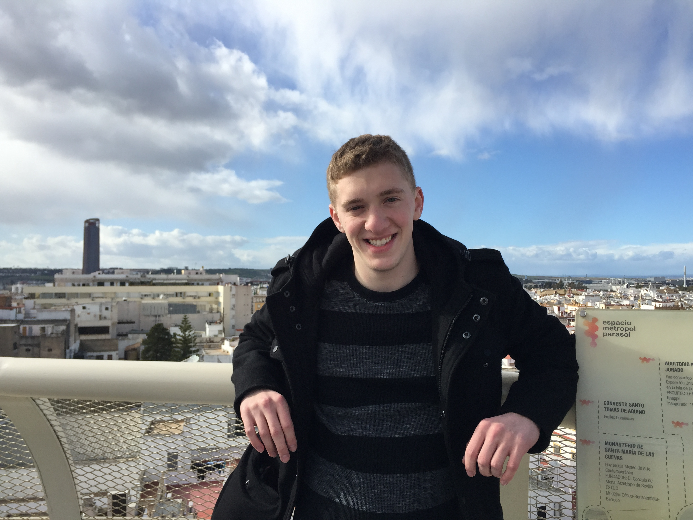

Ben Cootner

Employment
I'm currently a Senior iOS Engineer over at Grubhub. I initially joined Grubhub through the acquisition of LevelUp in 2018. Since then, I've been deeply involved in enhancing the user experience and functionality of Grubhub's iOS application, ensuring seamless navigation and robust performance from the moment users open the app to placing an order.
Education
I attended Boston University, and completed one semester abroad at the Universidad Autonoma de Madrid in Spain. In 2017, I graduated cum laude with a Bachelor of Science degree in Computer Engineering. During my time at BU, I worked as a content creator and website developer for the Mugar Library, and was a member of the BU Quidditch team.
Hobbies
In my free time I enjoy playing a variety of sports such as basketball, flag football, and tennis (often through local Volo leagues). I also enjoy hunting for geocaches, and playing one of the best games ever created-Magic The Gathering.
Projects
- Custom light strip - Designed and constructed a bespoke light strip system housed in an aluminum channel, incorporating soldering, power injection, and a 3D-printed housing, all controlled by a QuinLED-Dig-Quad controller.
- Zyp - As CTO for a Boston based startup Zyp (an app for on demand house cleanings), I implemented several key features, planned the product roadmaps for all app updates, and successfully delivered multiple builds to the app store.
- FridgeView - My undergrad senior design project involving the creation of multiple Bluetooth connect hardware "cubes" equipped with cameras and sensors, synchronized through a Heroku database and accessible via an iOS app for real time fridge monitoring.
- Muliticylce CPU - Generated a virtual CPU in Verilog with an n-bit ALU, registers, state machines and multiple logic gates.
- Various iOS apps - Independently designed and published two original iOS apps (TimerTap and DigiDrag). Worked with others to create mobile apps during various Hackathons (HackBU, HackHarvard).
- This website - Coded using HTML, CSS and Javascript to get the current time, translate it into a hex color value, and set that as the webpage background color.
Contact
Email: bcootner@gmail.com
00:00:00